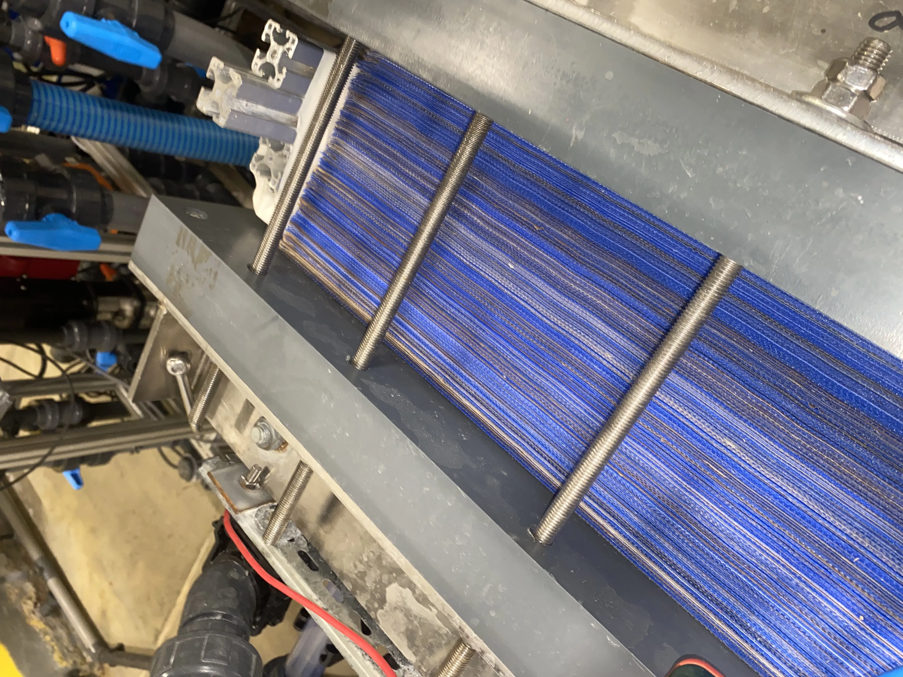
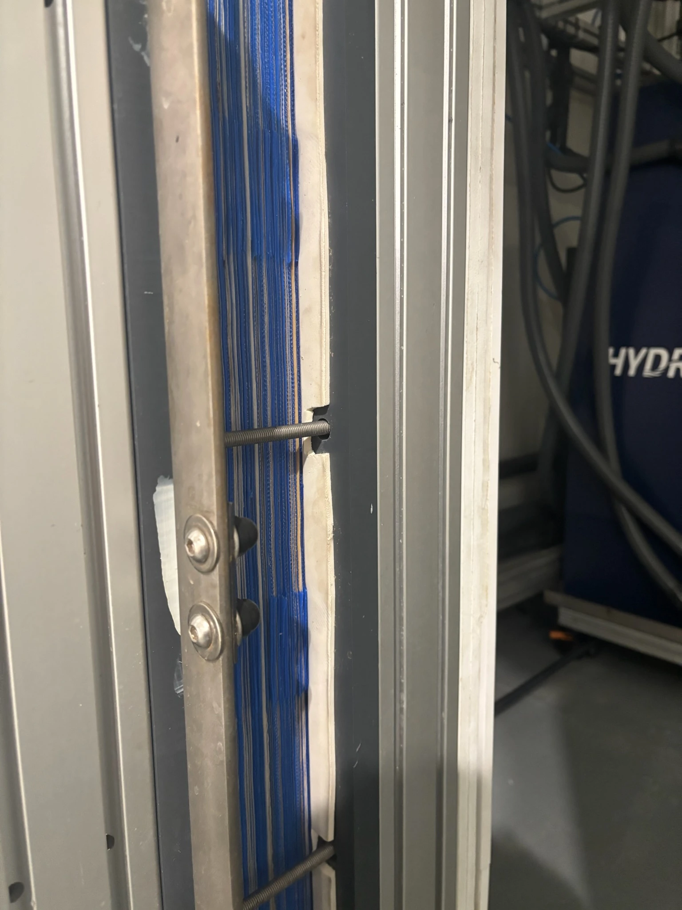

01
Selective ion movement
Membrane configurations can be adapted for salinity reduction, nitrate reduction, hardness management or selected ion separation.
HydroVolta’s technology story should be easy to understand: SonixED™ enables high-recovery, selective groundwater treatment; BPED stacks can be integrated for selected acid/base recovery pilots from desalination brines.

The public explanation should be simple: electric fields move selected ions through membranes, while ultrasound-assisted operation helps reduce scaling stress at the membrane surface.
Membrane configurations can be adapted for salinity reduction, nitrate reduction, hardness management or selected ion separation.
Ultrasound-assisted operation is designed to support fewer cleaning cycles in suitable, validated operating contexts.
The system targets high water recovery and low residual brine volumes where feedwater chemistry supports the case.
BPED should be introduced as a brine valorization tool, not as the headline technology for HydroVolta. It supports selected pilots for recovering hydrochloric acid and sodium hydroxide from suitable desalination brines.

Technical credibility depends on tying every number to feedwater chemistry, operating conditions and validation context.
| Claim | Recommended public wording |
|---|---|
| Up to 98% recovery | Designed to reach up to 98% recovery in suitable applications, depending on source chemistry and operating conditions. |
| 2–5% residual brine | Residual brine target range for selected applications where chemistry and recovery goals support it. |
| 50–90% CIP reduction | Targeted reduction in CIP cycles in validated operating contexts. |